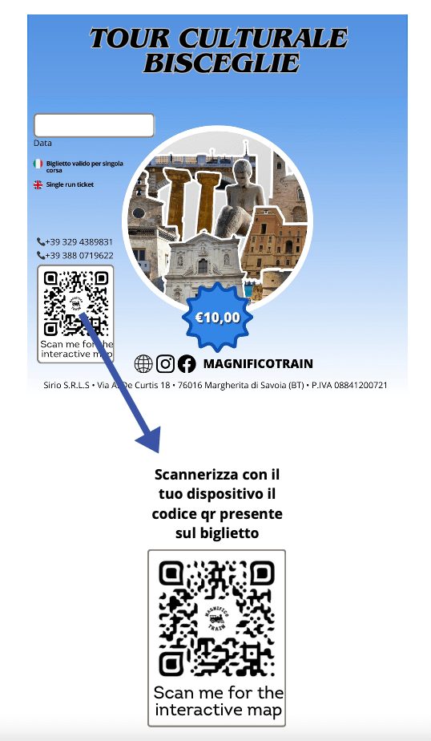

Tour Culturale


La più grande piazza di Bisceglie, conosciuta come Palazzuolo. Fu usata per la sosta dei cavalli e come cava di pietra. Donata al Comune nel 1478, presenta giardini con palme e oleandri.

Uno dei quattro torrioni della cinta muraria aragonese, costruita per difendere la città.

Chiesa del XII secolo, concessa ai frati domenicani. Presenta tre navate e opere d'arte come un affresco della Madonna del Muro.

Antico convento dei Domenicani, fondato nel 1502 e trasformato in sede comunale dopo il 1809.

Opera commemorativa per i marinai italiani caduti, situata sul lungomare, simbolo di memoria e riconoscenza.

Antico porto con un bacino portuale storico e un moderno porto turistico con 500 posti barca. Unisce tradizione e attività di pesca locale.

Costruito nel 1565 per rafforzare la difesa della città contro gli attacchi turchi dal mare.

Parte della cinta muraria del XVI secolo, ora sede del Mondadori Bookstore, un luogo che unisce storia e cultura.

Torre eretta nel 1060, alta 27 metri, usata come allarme aereo durante la seconda guerra mondiale.

Castello del XIII secolo con quattro torri angolari. Attualmente sottoposto a restauro.

Chiesetta del 1638 vicino al Castello Svevo Angioino, conosciuta come "Chiesa del Purgatorio".

Parco storico con area giochi, situato in una zona centrale della città.

Storico palazzo segnato dalle cannonate austriache del 1916, conserva tracce dell'evento sulla facciata.

Palazzo del 1700 con architettura simile a quella del 1400. Ospita una collezione privata di dipinti, porcellane e carrozze.